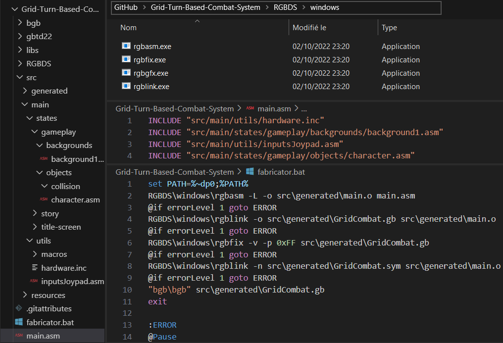
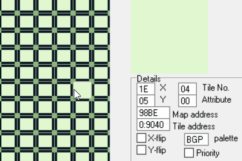

Programming on gameboy is a big step forward in my learning of
coding in general. It encompasses multiple important programming
concepts that are not usually covered in standard projects, example:
• scripting a complete stream of literal instructions
• hardware memory managing (inputs, objects diplaying...)
My objectif is to have a framework for a turn based game with
deplacements and actions.
Grid Turn Based Combat System
GameBoy Developpment - WIP


I am using the RGBDS toolchain, so the way to
operate is more complex. To compile my code,
I wrote a, more advanced, batch file than I
did for the 3D rendering project. I have
split my code in multiple files in order to
have an intelligible workspace.

I practised working in RAM with custom formatted data; getting
data from specific addresses (input memory map in this example).
This function abort instructions if a key has already been pressed. As you can see, I am comparing a specific bit (the 8th) to my variable, wich stores the current pressed keys, to know if I have to skip the event called by the current input (every instructions following the "Down:" label).
This function abort instructions if a key has already been pressed. As you can see, I am comparing a specific bit (the 8th) to my variable, wich stores the current pressed keys, to know if I have to skip the event called by the current input (every instructions following the "Down:" label).

This is my current playground (very beginning of the project).
The tiles change corresponding to the character position;
after a movement, the reached tile change to blank and
the previous one get back to normal. By detecting the
tilemap address on wich there is the character, I can change
its tile address attribute (its graphics).
What is next?
• structuring as object oriented
• porting the project to gbc
• turn-based combat system
• actions to do in a turn